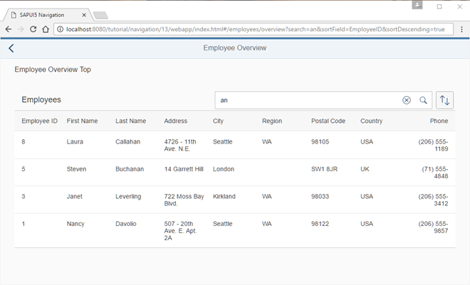

You can view and download all files in the Samples in the Demo Kit at Routing and Navigation - Step 13.
sap.ui.define([
"sap/ui/demo/nav/controller/BaseController",
"sap/ui/model/Filter",
"sap/ui/model/FilterOperator",
"sap/ui/model/Sorter",
"sap/m/ViewSettingsDialog",
"sap/m/ViewSettingsItem"
], function(
BaseController,
Filter,
FilterOperator,
Sorter,
ViewSettingsDialog,
ViewSettingsItem
) {
"use strict";
return BaseController.extend("sap.ui.demo.nav.controller.employee.overview.EmployeeOverviewContent", {
onInit: function () {
...
},
_onRouteMatched: function (oEvent) {
// save the current query state
this._oRouterArgs = oEvent.getParameter("arguments");
this._oRouterArgs["?query"] = this._oRouterArgs["?query"] || {};
var oQueryParameter = this._oRouterArgs["?query"];
// search/filter via URL hash
this._applySearchFilter(oQueryParameter.search);
// sorting via URL hash
this._applySorter(oQueryParameter.sortField, oQueryParameter.sortDescending);
},
...
_initViewSettingsDialog: function () {
var oRouter = this.getRouter();
this._oVSD = new ViewSettingsDialog("vsd", {
confirm: function (oEvent) {
var oSortItem = oEvent.getParameter("sortItem");
this._oRouterArgs["?query"].sortField = oSortItem.getKey();
this._oRouterArgs["?query"].sortDescending = oEvent.getParameter("sortDescending");
oRouter.navTo("employeeOverview", this._oRouterArgs, true /*without history*/);
}.bind(this)
});
...
},
...
});
});We enhance the EmployeeOverviewContent controller further to add
support for bookmarking the table's sorting options. We expect two query parameters
sortField and sortDescending from the URL for
configuring the sorting of the table. In the matched handler of the route
employeeOverview, we store the query parameter in the
oQueryParameter variable and add an additional call to
this._applySorter(oQueryParameter.sortField,
oQueryParameter.sortDescending) . This triggers the sorting action
based on the two query parameters sortField and
sortDescending from the URL.
Next we change the confirm event handlers of our
ViewSettingsDialog. The confirm handler
updates the current router arguments with the parameters from the event accordingly.
Then we call oRouter.navTo("employeeOverview", this._oRouterArgs,
true) with the updated router arguments to persist the new sorting
parameters in the URL. Both the previous arguments (i.e. search)
and the new arguments for the sorting will then be handled by the matched event
handler for the employeeOverview route.
Congratulations! Even the sorting options of the table can now be bookmarked. Try to access the following pages:
webapp/index.html#/employees/overview?sortField=EmployeeID&sortDescending=true
webapp/index.html#/employees/overview?search=an&sortField=EmployeeID&sortDescending=true